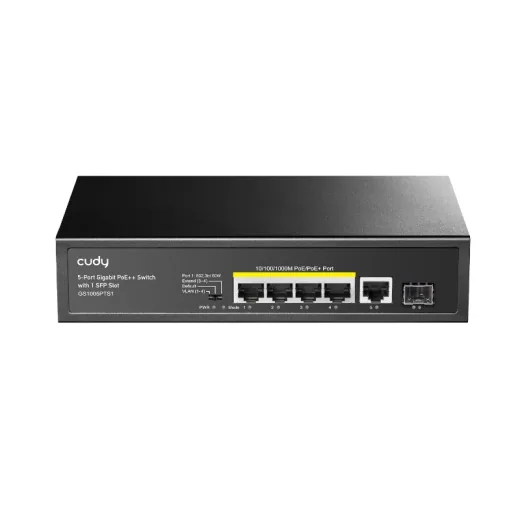
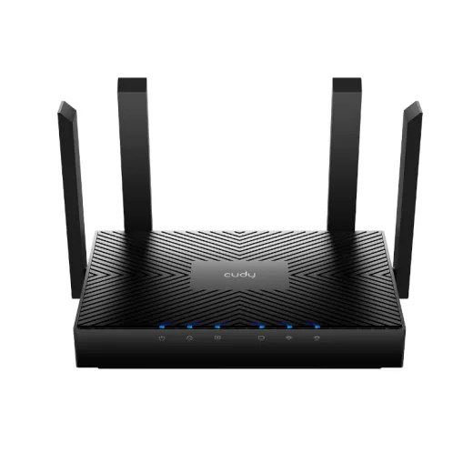
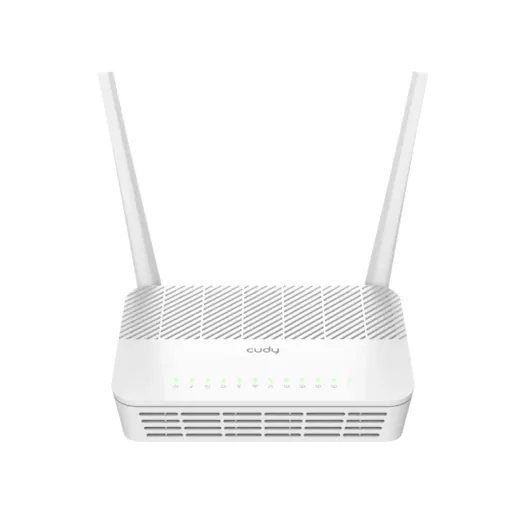
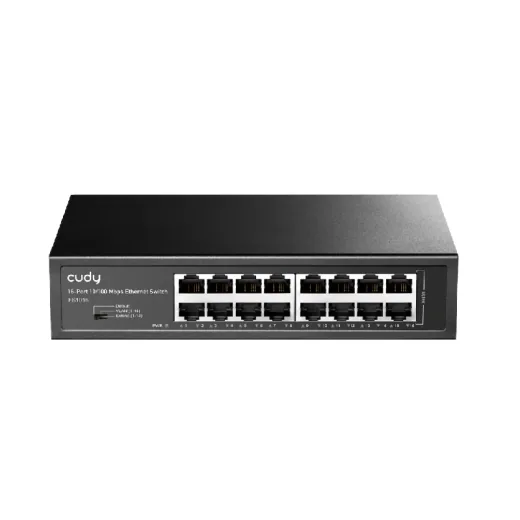
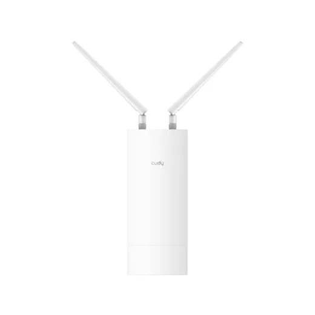
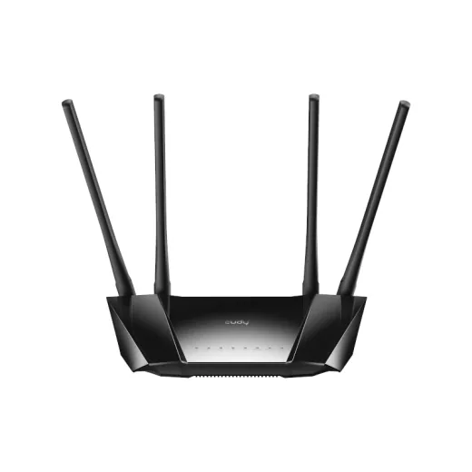
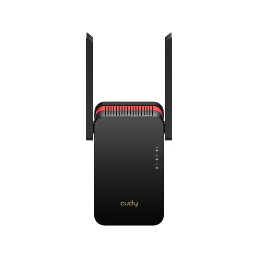
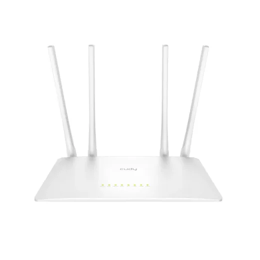
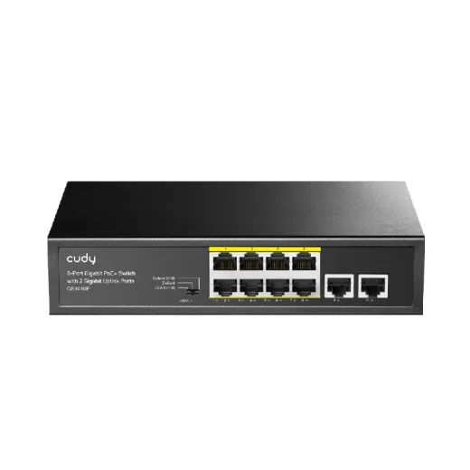

CUDY · Modelo GS1005PTS1
Switch 5 Puertos 10/100/1000 Mbps Gigabit C/Poe+ Cudy 120W
L 1,184.99
En Acosa
Precio en cada tienda
| Tienda | Precio | Antes | Disponibilidad | |
|---|---|---|---|---|
| Acosa | L 1,184.99 | — | Disponible | Ver en tienda › |
Precios referenciales tomados de cada tienda el 14 de noviembre de 2026. El precio válido es el que muestra la tienda al comprar.
Otros routers y redes CUDY

Router Cudy 2976Mbps Gigabit 5Ghz Ax3000 Dual BandL 1,225En Acosa
Router Cudy Gpon 2488Gbps 5Ghz AC1200 Dual BandL 1,095En Acosa
Switch 16 Puertos 10/100 Mbps Cudy Metal Fs1016L 945En Acosa
Access Point Cudy 867Mbps Gigabit 5Ghz Dual Band Para Exterior Ac1200L 1,505.01En Acosa
Router Cudy 4G 300Mbps Inalambrico 2.4Ghz N300 Dual BandL 1,559En Acosa
Repetidor Cudy 2402Mbps Dual Band 5Ghz Wifi 6 Ax3000L 1,595En Acosa
Router Cudy 867Mbps Inalambrico 5Ghz Ac1200 Dual BandL 695En Acosa
Switch 8 Puertos 10/100/1000 Mbps C/Poe Cudy P/Escritorio/Rack Gs1010PL 1,695En Acosa